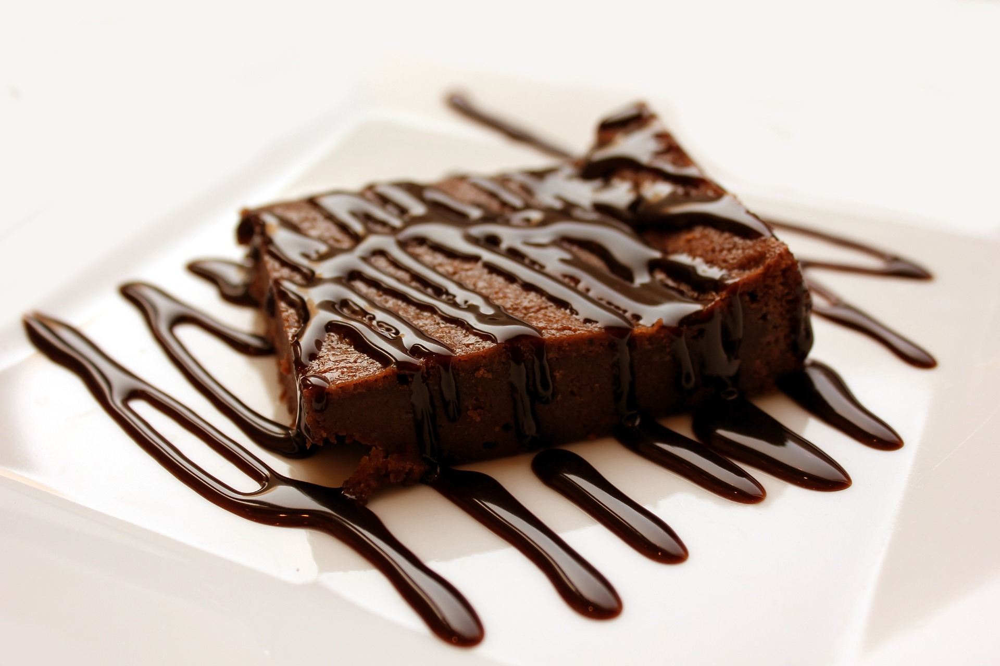

Schoko-Brownies
  15min
15min
 simpel
simpel
 06.10.2022
06.10.2022
15min
simpel
06.10.2022
Zutaten für
Arbeitszeit ca. 10 Minuten
Gesamtzeit ca. 25 Minuten
1. Ofen auf 175 Grad Ober-/ Unterhitze (Umluft: 155 Grad) vorheizen. Kleines Blech (28,5x23 cm) gut einfetten.Etwa 150 g der Zartbitterschokolade mit der Butter in einem kleinen Topf schmelzen. Etwas auskühlen lassen.
2. Eier mit Vanillezucker und braunem Zucker schaumig schlagen. Schokomasse hinzugeben. Mehl mit Backpulver,Salz und Kakaopulver vermengen und mit der Eiermasse verrühren. Übrige Schokolade hacken und unter die Teigmasse heben.Den Teig in das Blech geben, glattstreichen und im vorgeheizten Ofen circa 20 Minuten backen. 1 Blech ergibt ca. 12 Brownies.
3. Die Brownies am besten 1-2 Minuten zu früh aus dem Backofen nehmen, damit sie innen noch schön feucht sind. Zur Verzierung kannst du noch 100g Zartbitterschokolade im Wasserbad schmelzen und über die Brownies gießen. Yummy!
Tekin